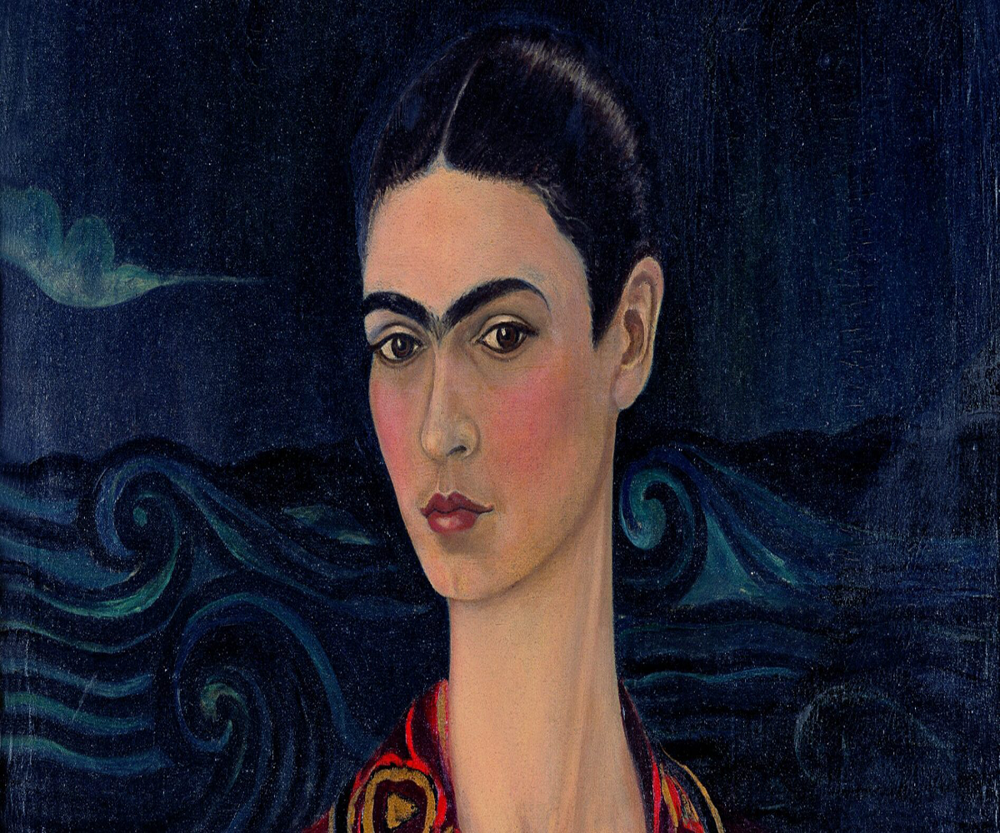

Frida Kahlo
Magdalena Carmen Frida Kahlo y Calderón (Città del Messico, 6 luglio 1907 – Città del Messico, 13 luglio 1954) è stata una pittrice messicana.
Il rapporto ossessivo con il suo corpo martoriato caratterizza uno degli aspetti fondamentali della sua arte. Allo stesso tempo coglie l'occasione di difendere il suo popolo attraverso la sua arte facendovi confluire il folclore messicano.sofo, architetto, pittore, scultore, disegnatore, trattatista, scenografo, matematico, anatomista, botanico, musicista, geologo, ingegnere e progettista.
